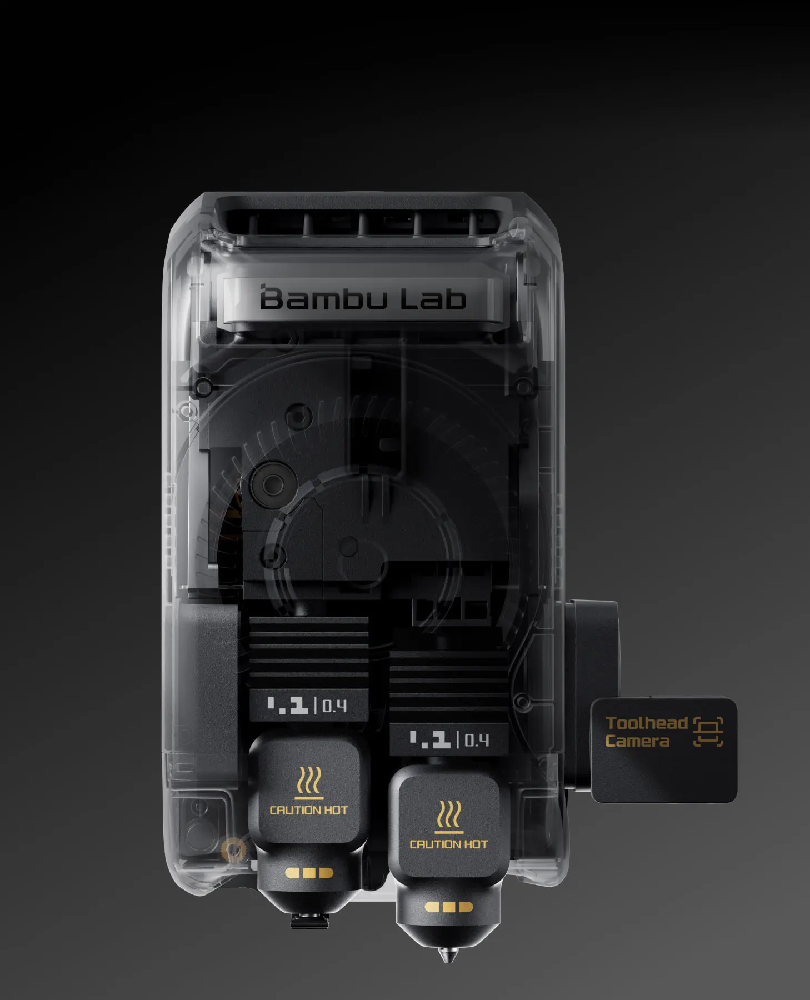
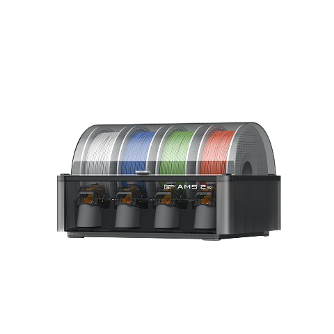
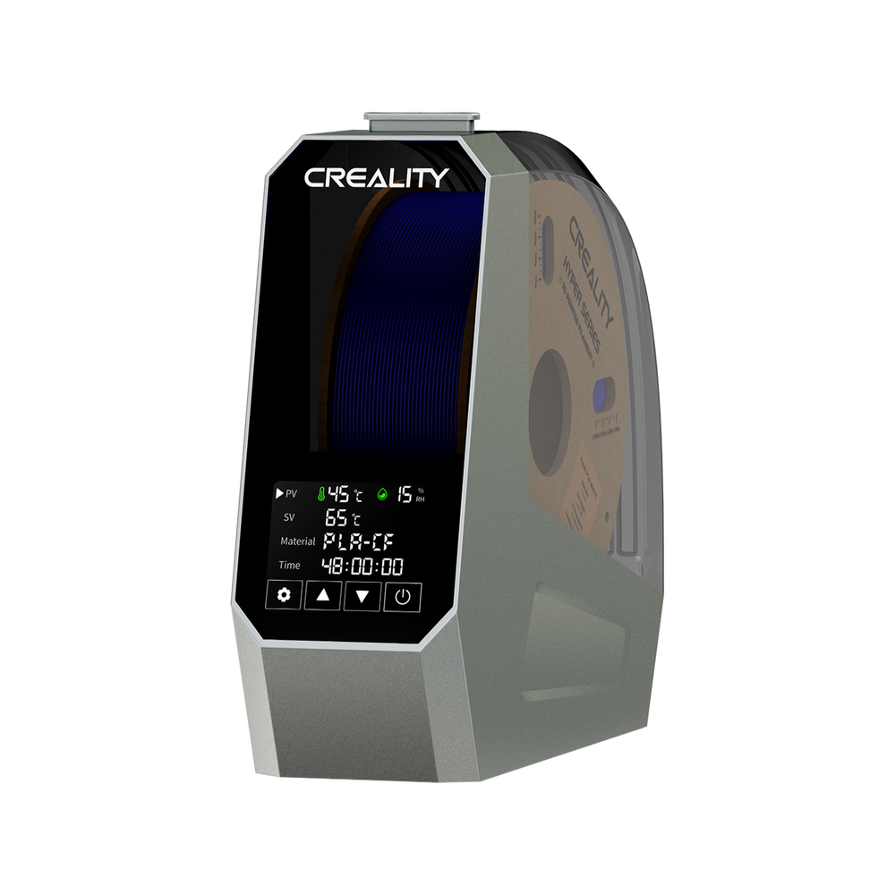

Fikrin ilk hali.
Prototipler ve ürün geliştirme parçaları. Ekrandaki modelinizi elinizde görün, deneyin, geliştirin.
Prototip · Model · Küçük seriESKİŞEHİR’DE ÖZEL 3B BASKI
Bir prototip. Eksik bir parça. Size özel bir tasarım.
8 yıllık deneyimle, fikrinizi birlikte gerçeğe dönüştürelim.

NELER ÜRETİYORUZ?
İster ilk denemeniz, ister sıradaki projeniz.
Doğru malzeme ve baskı ayarını birlikte seçiyoruz.
Prototipler ve ürün geliştirme parçaları. Ekrandaki modelinizi elinizde görün, deneyin, geliştirin.
Prototip · Model · Küçük seriBir tutucu, bağlantı aparatı ya da kırılan plastik parçanın yenisi. İşlevi olan küçük çözümler.
Yedek parça · Aparat · OnarımOyun aksesuarları, dekoratif objeler ve çok renkli tasarımlar. Günlük hayata kişisel bir dokunuş.
Kutu oyunları · Dekorasyon · FigürTek bir parçadan 20–50 adetlik küçük serilere. Modeliniz yoksa fikrinizi konuşarak başlayabiliriz.
8 YILLIK 3B BASKI DENEYİMİ
Gegebaskı’nın arkasında, 3B baskıyla geçen 8 yıllık kişisel deneyimim var. Modeli incelerken, malzemeyi seçerken ve baskıyı hazırlarken bu birikimden yararlanıyorum.
Parçanın nerede kullanılacağını konuşarak başlıyorum. Baskı yönünden destek ihtiyacına, yüzey görünümünden son kontrole kadar her aşamayı projenize göre değerlendiriyorum.
Projeniz üzerine konuşalımÜRETİMİN ARKASINDA
Modelinize uygun ayarlar, özenle hazırlanan malzeme.
Deneyimi destekleyen bir üretim düzeni.
Bambu Lab X2D
Çift nozul sayesinde modeli ve desteğini farklı malzemelerle basabiliyoruz. Uygun tasarımlarda daha kolay ayrılan destekler, daha temiz temas yüzeyleri.
Isıtmalı kapalı hazne ise teknik malzemelerle çalışırken daha dengeli bir baskı ortamı sağlıyor.

Malzeme ve destek eşleşmesini modelinize göre belirliyoruz. Kullanılabilir baskı alanı nozul düzenine göre değişir.
Bambu Lab ürün bilgileriBASKIDAN ÖNCE BAŞLAYAN ÖZEN
Bambu Lab AMS 2 Pro
Dört makara yuvası, otomatik renk geçişleri. Aktif kurutma ve kapalı saklama ile malzemeyi baskıya hazırlıyor, tasarımınızın renklerini birlikte seçiyoruz.

Renk ve malzeme eşleşmesi modele göre değerlendirilir. Her filament AMS ile uyumlu değildir; kurutma koşulları malzemeye göre değişir.
Üretici bilgileriCreality Space Pi · Tek makara
Nem, baskı yüzeyinde iz bırakabilir. Space Pi ile tek makarayı malzemesine uygun sıcaklıkta kurutuyor, daha tutarlı bir sonuç için işe hazırlıktan başlıyoruz.

DOĞRU MALZEMEYLE
Malzeme isimlerini bilmeniz gerekmiyor.
Parçanın nerede kullanılacağını anlatmanız yeterli.
GÖRSELLİK
Dekoratif objeler ve figürler için mat, ipeksi ya da dokulu yüzey seçenekleri.
PLA · Mat PLA · Silk PLAİŞLEV
Aparatlar ve teknik parçalar için kullanım koşullarına uygun malzeme seçimi.
PETG · ABS · ASAESNEKLİK
Esnemesi veya darbeyi yumuşatması gereken parçalar için esnek filamentler.
TPU · Farklı sertlik seçenekleriPA (naylon), PC (polikarbonat), PP ve karbon ya da cam elyaf takviyeli filamentler gibi seçenekleri projenize göre değerlendirebiliriz. Malzeme, renk ve yüzey seçeneklerinin uygunluğu için iletişime geçin.
Yukarıdaki renk ve doku örnekleri temsilidir. Gerçek görünüm malzemeye ve baskı yönüne göre değişir.
Malzeme ve renk seçenekleri stok durumuna göre değişebilir.
NASIL ÇALIŞIR?
STL, OBJ, 3MF, STEP dosyanızı veya bir model linkini WhatsApp ya da e-posta ile paylaşın.
Malzeme, renk ve adet üzerinde konuşalım. Modelinize özel fiyat teklifini hazırlayalım.
Baskıyı tamamlayıp fotoğraflarını paylaşalım. Teslimden önce sonucu birlikte görelim.
Eskişehir dahil Türkiye’nin her yerine kargoyla gönderelim.

Masaüstü Ekibi
3B baskı partneri
AYNI MASANIN ETRAFINDA
Masaüstü Ekibi’nin 3B baskı partneri olarak kutu oyunu düzenleyicileri, kart tutucular ve oyun aksesuarları tasarlıyor, üretiyoruz.
Masada daha çok oyuna, kutuda daha çok düzene yer açıyoruz.
Masaüstü Ekibi’ni keşfedinEvet, tek parça sipariş verebilirsiniz. Tüm siparişler kargoyla gönderilir ve sipariş başına en az 50 gram malzeme ağırlığı gerekir.
Malzeme ağırlığı, baskı süresi ve gereken ek malzeme veya aksesuarlar birlikte değerlendirilir. Modelinizi ve istediğiniz adedi gönderin, net bir teklif paylaşalım.
İhtiyacınızı anlatabilir veya Thingiverse, Printables, MakerWorld ya da Thangs’tan bir model linki gönderebilirsiniz. Bağımsız bir 3B modelleme hizmeti sunmuyoruz; projeniz için uygun bir çözümü birlikte değerlendirebiliriz.
STL, OBJ, 3MF ve STEP dosyalarını kabul ediyoruz. Dosyanızı WhatsApp veya e-posta ile gönderebilirsiniz; model paylaşım sitelerinden bağlantı da yeterli.
Eskişehir dahil Türkiye’nin her yerine yalnızca kargo ile gönderim yapıyoruz. Kargo ücreti alıcıya aittir.
20–50 adetlik küçük seriler üretebiliyoruz. Daha yüksek adetler ve teslim süresi için modelinizi birlikte değerlendirelim.
BİRLİKTE ÜRETELİM
Bir dosya, bir bağlantı ya da aklınızdaki bir soru.
Başlamak için bir mesaj yeterli.